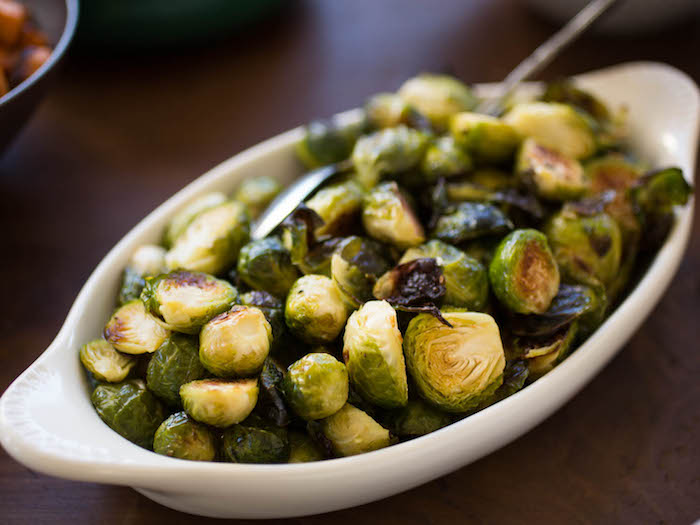
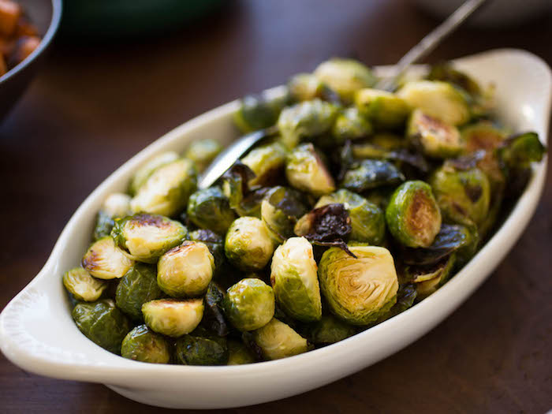

-
Pan Roasted Brussels Sprouts with Bacon
 

These simply prepared Pan Roasted Brussels Sprouts are cooked al dente, so they still have a nice bite.
They're generously topped with crispy bacon for an added crunch.
Ingredients
Makes 4 to 6 servings
- 4 strips thick-cut bacon
- 2 tablespoons butter
- 1 pound Brussels sprouts, halved
- 1/2 large onion, chopped
- Salt and freshly ground black pepper
- 1 tablespoon freshly ground black pepper
Directions
- Cook bacon in a large skillet over medium-high heat until crispy. Remove to a paper towel-lined plate, then roughly chop.
- In same pan with bacon fat, melt butter over high heat.
- Add onions and Brussels Sprouts and cook, stirring occasionally, until sprouts are golden brown, 8 to 10 minutes.
- Season with salt and pepper, to taste, and toss bacon back into pan. Serve immediately.